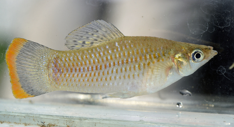
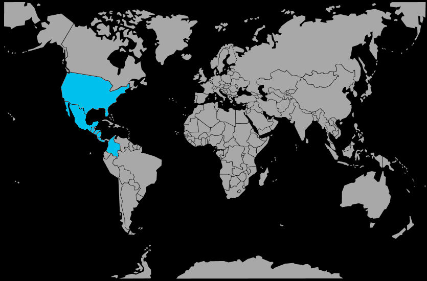

Systématique
- Ordre : Cyprinodontiformes
- Famille : Poeciliidae
- Genre : Poecilia
- Espèce : Poecilia sphenops

Poecilia sphenops, le molly commun, est un vivipare d’Amérique centrale de taille moyenne, atteignant 6 à 8 cm pour les mâles et jusqu’à 10 cm pour les plus grandes femelles.
L’espèce présente de nombreuses sélections (noir, dalmatien, argenté, doré, lyre, etc.), mais conserve un corps fuselé, une nageoire dorsale modérément haute et une silhouette globalement robuste typique des mollys.
C’est un poisson actif de pleine eau qui vit en groupes lâches, souvent près de la surface et du milieu de la colonne d’eau, où il broute les algues et recherche de petites proies.
Les mâles peuvent se montrer insistants envers les femelles et parfois querelleurs entre eux, surtout en petit volume; un groupe avec plus de femelles que de mâles et un bac suffisamment spacieux limite les tensions.
L’espèce est tolérante et robuste, mais apprécie une eau bien oxygénée, propre et légèrement dure, ainsi qu’une légère salinité facultative qui améliore souvent sa résistance.
Mode : ovovivipare; le mâle féconde la femelle grâce à un gonopode, et celle‑ci donne naissance à des alevins entièrement formés, prêts à se nourrir dès la naissance.
La gestation dure environ 4 semaines selon la température, et une femelle bien installée peut produire de 20 à plus de 100 alevins par portée, plusieurs fois dans l’année.
Les adultes peuvent consommer leurs propres jeunes, mais un décor très planté, avec des plantes de surface et des cachettes, permet de conserver une partie des naissances sans dispositif particulier.
Dimorphisme sexuel : le mâle est plus petit et plus svelte, avec un gonopode bien visible à la place de la nageoire anale; la femelle est plus grande, plus massive, avec une nageoire anale triangulaire et un abdomen souvent volumineux.
Espérance de vie : en aquarium, les mollys vivent généralement 3 à 5 ans lorsque l’eau est suffisamment dure, propre et bien oxygénée, avec une alimentation variée.
Dans la nature, Poecilia sphenops fréquente les rivières lentes, lagunes côtières, étangs, canaux et fossés, souvent en eau peu profonde, riche en végétation, parfois légèrement saumâtre.
Le substrat est en général vaseux ou sablo‑vaseux, parfois rocheux, avec une forte présence d’algues, de plantes aquatiques et de débris végétaux dont il exploite une partie comme ressource alimentaire.
Répartition

Origine naturelle :
- Amérique centrale, principalement du Mexique au Honduras.
- Présent dans divers systèmes d’eau douce et saumâtre de plaine.
L’espèce a été largement diffusée par l’aquariophilie et peut être rencontrée, localement, en dehors de son aire d’origine à la suite d’introductions.
Paramètres de maintenance
Température : 24 à 28 °C.
pH : 7,0 à 8,2, de neutre à alcalin.
GH : 10 à 25 °dGH, eau dure à très dure, avec possibilité d’ajouter un peu de sel pour les souches fragiles.
Courant : faible à modéré, avec une bonne oxygénation et une filtration efficace.
Volume conseillé : au minimum 120 L pour un groupe, afin d’offrir assez d’espace de nage et limiter le harcèlement des mâles sur les femelles.
Régime alimentaire
Régime : omnivore à tendance herbivore; dans la nature, il consomme algues filamenteuses, micro‑organismes, petits invertébrés, insectes et débris végétaux.
En aquarium, il accepte sans difficulté les paillettes, granulés, nourritures congelées et vivantes; une base de végétal (spiruline, légumes pochés finement) est importante pour éviter les problèmes digestifs.
Des repas variés et réguliers, sans excès, permettent d’obtenir des poissons robustes, bien colorés et une reproduction continue sans affaiblir les femelles.